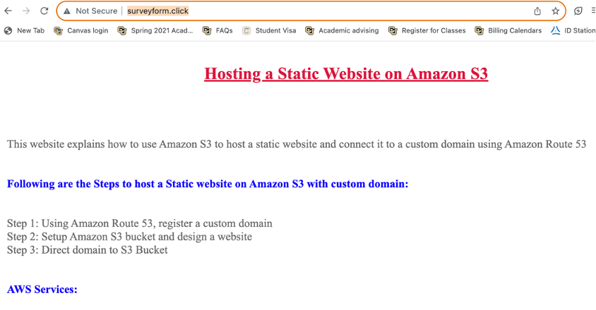

This website explains how to use Amazon S3 to host a static website and connect it to a custom domain using Amazon Route 53
Step 1: Using Amazon Route 53, register a custom domain
Step 2: Setup Amazon S3 bucket and design a website
Step 3: Direct domain to S3 Bucket
1. Route 53: Amazon Route 53 is a highly available and scalable Domain Name System (DNS) web service. Route 53
connects user requests to internet applications running on AWS or on-premises. It facilitates domain registration,
DNS routing, and resource health checking for your infrastructure. You have access to the DNS records on Route 53
that translate domain names (like example.com) into IP addresses for other resources.
2. Amazon S3: Amazon Simple Storage Service (Amazon S3) is an object storage service that offers industry-leading
scalability, data availability, security, and performance. You can use Amazon S3 to store and retrieve any amount of
data at any time, from anywhere.
• Purchase your custom domain by following all the prompts
Bucket name: same as your custom domain name(surveyform.click)
AWS Region: Region close to your location
Block all public access: uncheck
Keep all the others as defaults and click on create S3 bucket
We have now configured the S3 bucket that host a static website which is publicly accessible to the viewers.
Open the bucket, and you can view our static website. This URL was provided by Amazon. However, it is not hosted on
the custom domain.
Record Type: A-Route traffic to an IPV4 address and some AWS resources
Route traffic to: Alias to S3 website endpoint, and your hosted AWS region
Routing policy: Simple Routing
Evaluate target health: No
Then, click on create record.
Now you can view static website on the custom domain
